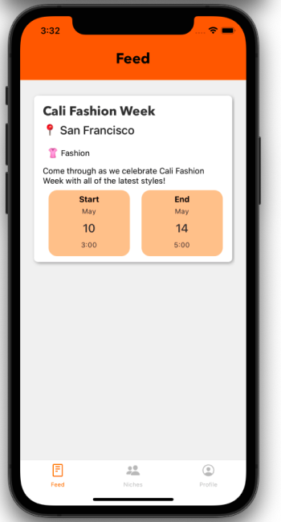

PROJECTS
Niche
This application allows individuals to attend events with other people in their communities with similar interests. The communities are based
on zipcode, and users can choose from a list of pre-selected communities. It was built using React Native and Firestore. This app was created
as a part of my Software Engineering Laboratory course in Spring 2021.

To run the app, follow the below steps:
- Clone our github repository: (user might need to install git/developer tools)
git clone https://github.com/vkalil/437_NicheApp.git - Install Homebrew (if you haven’t already):
/bin/bash -c "$(curl -fsSL https://raw.githubusercontent.com/Homebrew/install/HEAD/install.sh)" - Install node and npm:
brew install node - Install expo:
npm install --global expo-cli - Install yarn:
npm install --global yarn - Add expo
yarn add expo - Download the Expo Go app on your phone
- Go into the NicheApp directory in the cloned repository and run:
expo start - Scan the QR code on your phone and click the link
- Enjoy our app!
Cyber-Physical Vulnerabilities in Sensor Applications
This paper is the culmination of a research project for Recent Advances in Computer Security and Privacy in Spring 2021 in which three peers and I investigated the security of three different cyberphysical mediums: QR codes, audio encoders, and fingerprint scanners.
Forget Car Jackings, It’s Time for Car Hackings
This paper is the culmination of semester-long research for my Technical Writing course in Spring 2021, in which I investigated automobile cybersecurity and provided suggestions for the Ford Automotive company to enhance the security of their vehicles.
Personal Website
This website is my first endeavor with web development. I built this website from scratch using HTML and CSS, and I used GitHub Pages to host my website.
Tic Tac Toe and Gomoku in C++
I programmed a command line interactive game in which two games alternatively take turns until a player wins, the game is a draw,
or either player quits. This project was created in my Object-Oriented Software Development Laboratory class in Spring 2020. This was implemented using the rules of both games, object-oriented programming, and polymorphic inheritance. Below are three screenshots from the games.

Stuxnet and What It Means for Industrial Control Systems
In this culminating paper for my Introduction to Computer Security course in Fall 2020, I investigated the Stuxnet attack on the Iranian uranium-enrichment facility in Natanz. I wanted to learn more about the
specifics of this attack, its implications on cyberterrorism, and what it means for the security of industrial control systems in general.
The Effects of September 11, 2001 on Muslim American Identity
This paper is the result of semester-long research for my Diaspora in Jewish and Islamic Experience course in Fall 2020 about the effects of the September 11, 2001 attacks on Muslim Americans' relationships to their Islamic and American identities. In this paper, I provide historical
context, discuss reasons why Muslim Americans may want to distance themselves from these two pieces of their identities in the wake of 9/11, and analyze a variety of paths that Muslim Americans have taken to reconcile
their identities.
Analysis and Rewording of Elia Abu Madi's Poem, My Country
My Country (بلادي) by Elia Abu Madi (إيليا أبو ماضي) This paper was my final project for my Arabic language course for Spring 2020. I reworded the poem My Country (بلادي) by Elia Abu Madi (إيليا أبو ماضي) and analyzed its meaning. Click on the title to read my paper, and click on the title of the poem to read the poem I was analyzing.
St. Joan of Arc Biography - Arabic
This paper was my final project for my Arabic language course for Fall 2019. I researched St. Joan of Arc and wrote a short biography of her in Arabic. Click on the title to read my paper.
The Rights and Wrongs on Both Sides of the Wall
As a final project for my course on the Nuremberg Trials and International Justice in Fall 2018, I researched the legality and the military necessity behind the wall, or fence, that separates Israel and Palestine. Click on the title to read it.